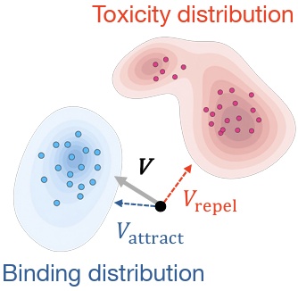

De novo design of therapeutic scFvs and multi-specific engagers from sequence alone
一本鎖抗体（scFv）をターゲットタンパク質の配列情報のみからデザインすることができるIASOワークフローを提案しました。
標的タンパク質のアミノ酸配列だけを手がかりに、そこに結合する抗体を一から設計できるでしょうか。私たちが開発したIASOは、一本鎖抗体の候補を生成し、結合予測をもとに実験で試す分子を絞り込みます。ペプチドでは、標的に結合しやすく毒性も低いと予測される配列を、1ステップで設計するモデルPepti-driftを開発しました。

一本鎖抗体（scFv）をターゲットタンパク質の配列情報のみからデザインすることができるIASOワークフローを提案しました。

推論中の最適化を必要とせず、1ステップで毒性の少ない、かつターゲットへの結合性を兼ね備えたペプチド配列を設計できるような生成モデルの開発を行いました。インターン先であるSB Intuitionsでの成果です。